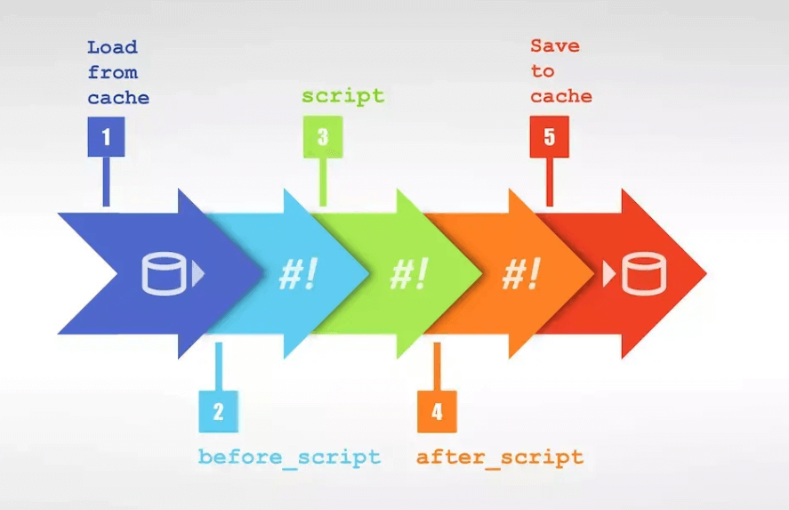

什么是 GitLab CI
GitLab CI 是GitLab内置的进行持续集成的工具，只需要在仓库根目录下创建 .gitlab-ci.yml 文件，并配置GitLab Runner；每次提交代码的时候，gitlab 将自动识别并且使用 GitLab Runner 执行任务。
GitLab Runner
GitLab-Runner就是一个用来执行 .gitlab-ci.yml 脚本的工具。Runner 就像认真工作的工人，GitLab-CI 就是管理工人的中心，所有工人都要在 GitLab-CI 里面注册。当相应的项目发生变化时，GitLab-CI 就会通知相应的工人执行对应的脚本。gitLab-Runner 可以分类两种类型：Shared Runner（共享型）和 Specific Runner（指定型）。
- Shared Runner：所有工程都能够用的，只有系统管理员能够创建。
- Specific Runner：只有特定的项目可以使用。
- 安装
官方文档: Install GitLab Runner - 注册
- 输入 GitLab URL 地址
- 输入注册 Token
- 指定
runner executor一般为shell
!!! Warning
1. 若是 `powershell` 需将配置文件里`shell`改为: `shell = "powershell"`
2. Runner 默认日志输出太小，可通过更改`output_limit = 40960`进行调整
3. Runner 默认为串行方式，可通过`concurrent = 2`指定能并行运行的数量
GitLab CI 流程
每个推送到 Gitlab 的提交都会产生一个与该提交关联的管道(pipeline)，管道(pipeline)是一个分成不同阶段(stage)的作业(job)的集合。多个 Stage 是按照顺序执行的，如果其中任何一个 Stage 失败，则后续的 Stage 不会被执行，整个 CI 过程被认为失败。

.gitlab-ci.yml 文件
GitLab CI 使用 YAML 文件.gitlab-ci.yml来管理项目配置。该文件必须存放于项目仓库的根目录，并且包含了你的项目如何被编译的描述语句,YAML文件使用一系列约束叙述定义了Job启动时所要做的事情。
Job
Job 是.gitlab-ci.yml文件中最基本的元素，由一系列参数定义了任务启动时所要做的事情，用户可以创建任意个任务；每个任务必须有一个独一无二的名字，但有一些保留 keywords 不能用于 Job 名称.
Job 被定义为顶级元素，并且至少包括一条script语句，如果一个 Job 没有显式地关联某个 Stage，则会被默认关联到 test Stage。
|
|
before_script和after_script
before_script 是用于定义一些在所有任务执行前所需执行的命令, 包括部署工作，可以接受一个数组或者多行字符串。after_script 用于定义所有 job 执行过后需要执行的命令，可以接受一个数组或者多行字符串。例如可以在 before_script 做好ssh连接的准备。
|
|
only 和 except
- only 和 except 两个参数说明了job什么时候将会被创建
- only 定义了 job 需要执行的所在分支或者标签
- except 定义了 job 不会执行的所在分支或者标签
Run Pipeline
- 提交代码时自动触发
- gitlab 上手动执行
在项目所在仓库里进入 CI/CD, 点击:Run Pipeline - Runner 本地运行
gitlab-runner exec shell 'job1'gitlab-runner exec shell 'job2'
如何跳过gitlab-ci流程
在 commit 信息中包含[ci skip]或 [skip ci],提交到仓库以后就会跳过本次 CI